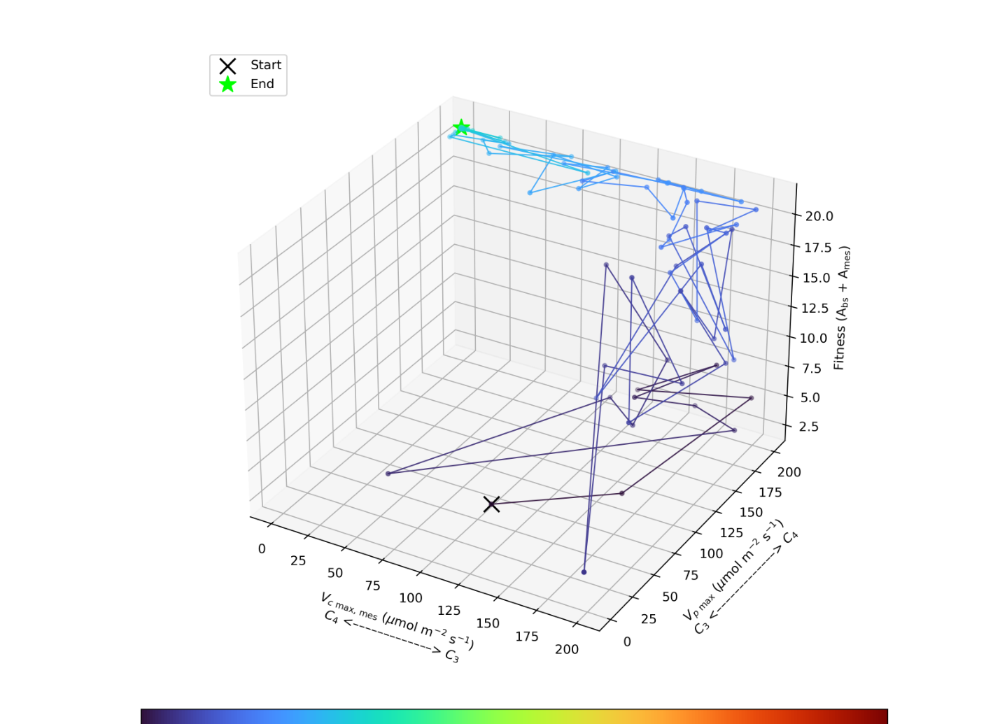

dx/dt = r x (1 - x/K)
accepted steps—
rejected steps—
final state—
Scientific modeling workbench
Write the system you mean to study. Change parameters, initial conditions, time spans, outputs, and numerical methods. Simulate it, challenge it, and keep every result connected to the model that produced it.
Model structure
Describe what changes, what interacts, and what you observe. The workspace then exposes compatible experiments and analyses without losing model provenance.
States, derivatives, reaction rules, parameters, initial conditions, events, tolerances, and requested outputs.
Create an equation model → Individuals and populationsAgent rules, lattices, movement, interaction, mutation, selection, migration, drift, and fitness landscapes.
Create a population model → Observations and mechanismsImport observations, fit mechanisms, quantify uncertainty, build surrogates, or discover governing equations.
Import observations →Connected workspaces
Subject color answers “where am I?” and the lab accent answers “what am I doing?”. Quantitative plots keep independent scientific palettes.
Strong starting points
Examples are templates, not the product. Each starter exposes scientific inputs and relevant visual evidence; replace its equations, rules, parameters, data, or objective whenever you are ready.
Four-state research-derived ODE solved locally with adaptive RK45.
Deterministic frequency change and finite-population stochastic replicates with fixation and diversity evidence.
Open model →Fitness, step size, covariance spectrum, coordinate deviations, diversity, evaluation cost, and search trajectory.
Open model →First-order, total-order, interaction, screening, convergence, and uncertainty views remain output-aware.
Open model →
Heat maps, contours, fitness surfaces, trajectories, and contextual 3D when spatial or phenotype geometry justifies it.
Open model →Response surfaces, residuals, calibration, uncertainty, and active sampling for expensive model evaluations.
Open model →Result contract
The interface separates results calculated in this browser from bounded approximations, export workflows, and methods that are not available.

Creator
Multiscale modeler, applied mathematician, computational biologist, and scientific software developer.